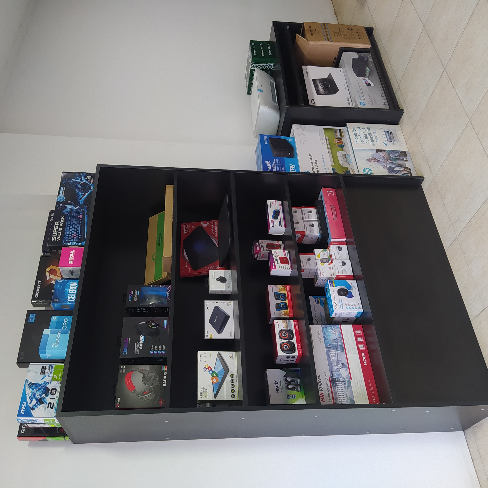
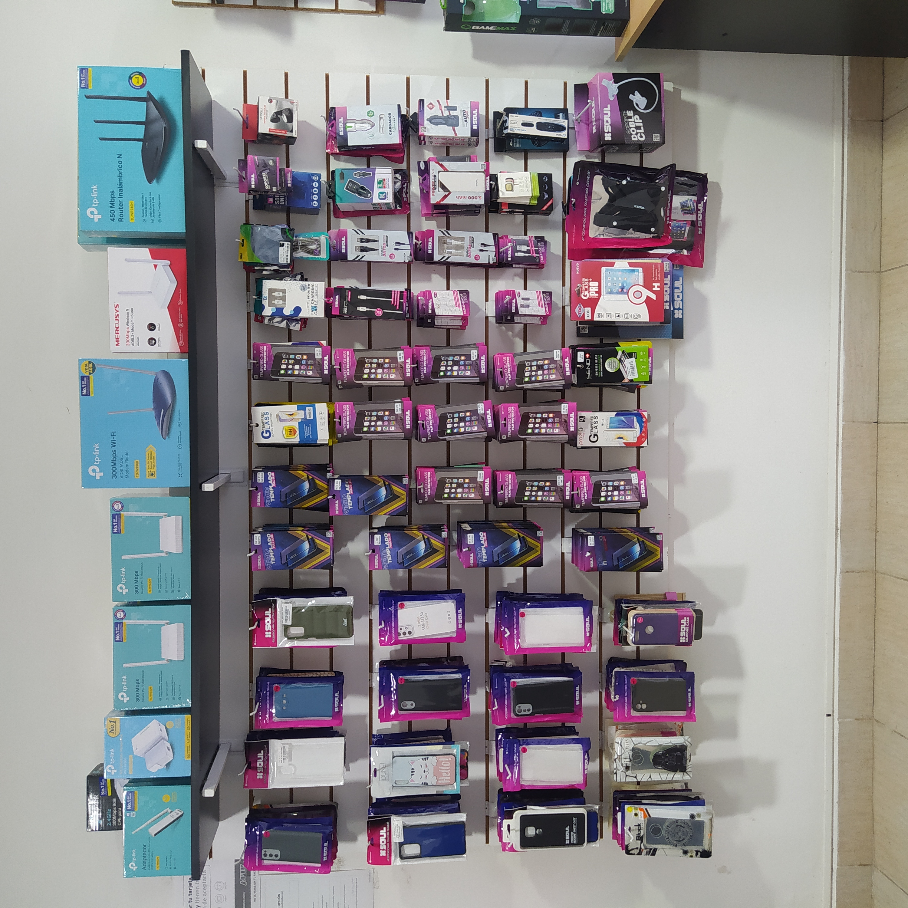

Insumos de impresoras
Es importante asegurarse de utilizar insumos de alta calidad y compatibles con la impresora para garantizar una impresión óptima y evitar daños en la impresora.

Dispositivos de entrada que permiten al usuario controlar el movimiento del cursor en la pantalla
Monitores: dispositivos de salida que muestran la información de la computadora en la pantalla.
Auriculares: dispositivos de salida que permiten al usuario escuchar el sonido sin que lo oiga el resto de las personas.
Cámaras web: dispositivos de entrada que permiten al usuario capturar imágenes y vídeo para su uso en videoconferencias o streaming.
Adaptadores de red: dispositivos que permiten a la computadora conectarse a una red.
Unidades de almacenamiento externas: dispositivos que permiten al usuario almacenar información fuera de la computadora, como discos duros externos, unidades flash USB y tarjetas de memoria.
Accesorios y Equipos

Fundas y protectores de pantalla: utilizados para proteger el teléfono contra rasguños, roturas y caídas.
Baterías externas: dispositivos portátiles que se utilizan para cargar la batería del teléfono cuando no se tiene acceso a una fuente de energía.
Cargadores: dispositivos que se utilizan para cargar la batería del teléfono.
Auriculares y manos libres: dispositivos de salida que permiten al usuario escuchar el sonido producido por el teléfono y hablar sin sostener el teléfono en la mano.
Tarjetas de memoria: dispositivos de almacenamiento externo que se utilizan para aumentar la capacidad de almacenamiento del teléfono.
Soportes para teléfonos: dispositivos que se utilizan para sostener el teléfono en una posición específica para facilitar la visualización de contenido.